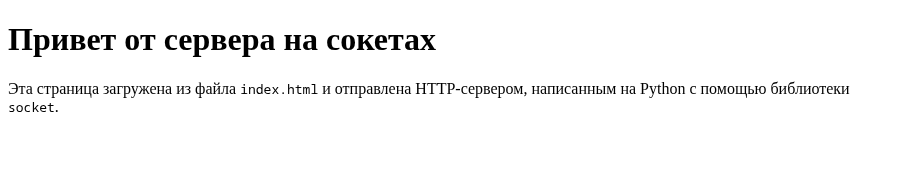
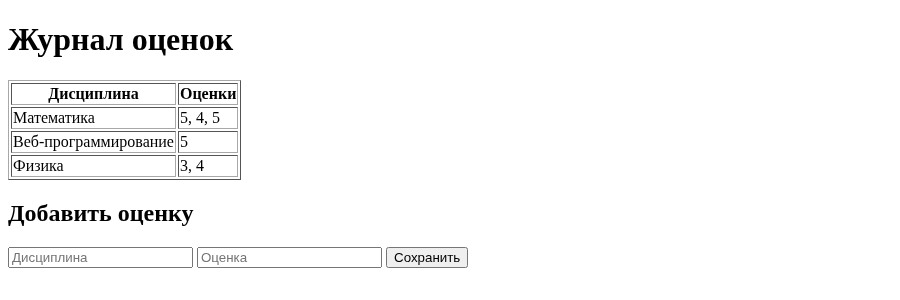

Лабораторная работа 1. Работа с сокетами
Выполнил: Шайхиев Эльдар Ильхамович, группа K3339.
Цель работы: понять принципы межсокетного взаимодействия в вебе, научиться реализовывать базовую архитектуру клиент-сервер.
Все программы написаны на Python 3 и используют только стандартную библиотеку (socket,
threading). Код лежит в students/K3339/laboratory_works/Shaykhiev_Eldar/laboratory_work_1/, у каждого задания
своя папка и свой порт, поэтому серверы можно запускать одновременно:
laboratory_work_1/
task1/ server.py, client.py UDP, порт 8080
task2/ server.py, client.py TCP, порт 8081
task3/ server.py, index.html HTTP, порт 8082
task4/ server.py, client.py чат, TCP + threading, порт 8083
task5/ server.py веб-сервер GET/POST, порт 8084
Порядок запуска везде одинаковый: сначала сервер, потом клиент в отдельном терминале.
Задание 1. Обмен сообщениями по UDP
Условие. Клиент отправляет серверу сообщение «Hello, server», сервер его выводит и отвечает
«Hello, client», которое выводит клиент. Использовать socket и протокол UDP.
Описание протокола
UDP работает без установления соединения: сокет создаётся с типом SOCK_DGRAM, и каждое
сообщение уходит отдельной датаграммой. Поэтому у сервера нет listen() и accept(): он
привязывается к адресу через bind() и ждёт датаграммы в recvfrom(). Этот метод возвращает
данные вместе с адресом отправителя, и ответ уходит на этот адрес через sendto().
Клиенту bind() не нужен: при первом sendto() система сама назначает ему свободный порт.
| Шаг | Кто | Вызов | Данные |
|---|---|---|---|
| 1 | клиент | sendto(..., ('localhost', 8080)) |
Hello, server |
| 2 | сервер | recvfrom(BUFFER_SIZE) → данные и адрес клиента |
|
| 3 | сервер | sendto(..., client_address) |
Hello, client |
| 4 | клиент | recvfrom(BUFFER_SIZE) |
Строки переводятся в байты через encode() и обратно через decode() (UTF-8).
Код
import socket
HOST = 'localhost'
PORT = 8080
# Сколько байт забираем за один вызов recv, а не размер сообщения
BUFFER_SIZE = 1024
# SOCK_DGRAM = UDP: соединение не устанавливается, listen/accept не нужны
server_socket = socket.socket(socket.AF_INET, socket.SOCK_DGRAM)
server_socket.bind((HOST, PORT))
print(f'UDP-сервер запущен на {HOST}:{PORT}...')
while True:
# recvfrom возвращает и данные, и адрес отправителя, по нему отвечаем
data, client_address = server_socket.recvfrom(BUFFER_SIZE)
print(f'Сообщение от {client_address}: {data.decode()}')
server_socket.sendto('Hello, client'.encode(), client_address)
import socket
HOST = 'localhost'
PORT = 8080
# Сколько байт забираем за один вызов recv, а не размер сообщения
BUFFER_SIZE = 1024
client_socket = socket.socket(socket.AF_INET, socket.SOCK_DGRAM)
# Без connect: адрес получателя указывается в каждом sendto
client_socket.sendto('Hello, server'.encode(), (HOST, PORT))
data, server_address = client_socket.recvfrom(BUFFER_SIZE)
print(f'Ответ от сервера {server_address}: {data.decode()}')
client_socket.close()
Пример работы
$ python task1/server.py
UDP-сервер запущен на localhost:8080...
Сообщение от ('127.0.0.1', 44268): Hello, server
$ python task1/client.py
Ответ от сервера ('127.0.0.1', 8080): Hello, client
Порт клиента (44268) система выбрала сама, по нему сервер и отправил ответ.
Задание 2. Вычисления через TCP
Условие. Клиент запрашивает выполнение математической операции, параметры вводятся с
клавиатуры, сервер вычисляет и возвращает результат. Использовать socket и протокол TCP.
Вариант. Номер в журнале 35, варианты идут по кругу с шагом 4: (35 − 1) mod 4 + 1 = 3, то есть
вариант 3 - площадь трапеции: S = (a + b) / 2 * h, где a и b - основания, h - высота.
Описание протокола
TCP сначала устанавливает соединение: сервер вызывает bind(), listen() и в цикле accept(),
клиент вызывает connect(). После этого обе стороны пишут и читают через sendall() и recv().
| Шаг | Кто | Данные |
|---|---|---|
| 1 | клиент | вводит a, b, h с клавиатуры, подключается к серверу |
| 2 | клиент → сервер | строка из трёх чисел через пробел, например 3 5 4 |
| 3 | сервер | разбирает строку, проверяет, что это три положительных числа, считает площадь |
| 4 | сервер → клиент | Площадь трапеции: 16.0 или текст ошибки |
| 5 | сервер | закрывает соединение и ждёт следующего клиента |
Проверка входных данных сделана на сервере, потому что считает и отвечает за результат он.
Если прислали не числа или неположительные значения, клиент получает понятное сообщение об ошибке,
а сервер продолжает работать. Соединение с клиентом закрывается в finally, то есть при любом
исходе, а непредвиденная ошибка (например, байты не в UTF-8) ловится except Exception:
сервер печатает её и ждёт следующего клиента. Так же устроены серверы заданий 3 и 5.
Опция SO_REUSEADDR позволяет сразу перезапустить сервер на том же порту. Без неё после остановки
порт какое-то время занят (состояние TIME_WAIT), и bind() падает с «Address already in use».
Код
import socket
HOST = 'localhost'
PORT = 8081
# Сколько байт забираем за один вызов recv, а не размер сообщения
BUFFER_SIZE = 1024
# Сколько подключений ОС держит в очереди, пока сервер не вызвал accept()
BACKLOG = 1
def parse_params(request):
# Запрос приходит строкой вида "a b h"; текст ValueError уходит клиенту
try:
a, b, h = map(float, request.split())
except ValueError:
raise ValueError('нужно передать три числа: a, b и h') from None
if a <= 0 or b <= 0 or h <= 0:
raise ValueError('основания и высота должны быть положительными')
return a, b, h
def trapezoid_area(a, b, h):
return (a + b) / 2 * h
server_socket = socket.socket(socket.AF_INET, socket.SOCK_STREAM)
server_socket.setsockopt(socket.SOL_SOCKET, socket.SO_REUSEADDR, 1)
server_socket.bind((HOST, PORT))
server_socket.listen(BACKLOG)
print(f'TCP-сервер запущен на {HOST}:{PORT}...')
while True:
client_connection, client_address = server_socket.accept()
try:
print(f'Подключение от {client_address}')
request = client_connection.recv(BUFFER_SIZE).decode()
print(f'Параметры: {request}')
try:
response = f'Площадь трапеции: {trapezoid_area(*parse_params(request))}'
except ValueError as error:
response = f'Ошибка: {error}'
print(response)
client_connection.sendall(response.encode())
except Exception as error:
# Неожиданная ошибка в одном запросе не должна останавливать весь сервер
print(f'Ошибка при обработке запроса от {client_address}: {error!r}')
finally:
# Соединение закрывается, даже если при обработке запроса случилась ошибка
client_connection.close()
import socket
HOST = 'localhost'
PORT = 8081
# Сколько байт забираем за один вызов recv, а не размер сообщения
BUFFER_SIZE = 1024
print('Площадь трапеции S = (a + b) / 2 * h')
a = input('Основание a: ')
b = input('Основание b: ')
h = input('Высота h: ')
client_socket = socket.socket(socket.AF_INET, socket.SOCK_STREAM)
client_socket.connect((HOST, PORT))
client_socket.sendall(f'{a} {b} {h}'.encode())
response = client_socket.recv(BUFFER_SIZE).decode()
print(response)
client_socket.close()
Пример работы
$ python task2/client.py
Площадь трапеции S = (a + b) / 2 * h
Основание a: 3
Основание b: 5
Высота h: 4
Площадь трапеции: 16.0
$ python task2/client.py
Площадь трапеции S = (a + b) / 2 * h
Основание a: 2.5
Основание b: 7
Высота h: 3
Площадь трапеции: 14.25
$ python task2/client.py
Площадь трапеции S = (a + b) / 2 * h
Основание a: десять
Основание b: 7
Высота h: 3
Ошибка: нужно передать три числа: a, b и h
$ python task2/client.py
Площадь трапеции S = (a + b) / 2 * h
Основание a: 4
Основание b: 6
Высота h: -2
Ошибка: основания и высота должны быть положительными
$ python task2/server.py
TCP-сервер запущен на localhost:8081...
Подключение от ('127.0.0.1', 52908)
Параметры: 3 5 4
Площадь трапеции: 16.0
Подключение от ('127.0.0.1', 52920)
Параметры: 2.5 7 3
Площадь трапеции: 14.25
Подключение от ('127.0.0.1', 52936)
Параметры: десять 7 3
Ошибка: нужно передать три числа: a, b и h
Подключение от ('127.0.0.1', 52938)
Параметры: 4 6 -2
Ошибка: основания и высота должны быть положительными
Проверка вручную: (3 + 5) / 2 · 4 = 16, (2.5 + 7) / 2 · 3 = 14.25.
Задание 3. Раздача HTML-страницы по HTTP
Условие. Клиент подключается к серверу и получает HTTP-сообщение с HTML-страницей, которую
сервер загружает из файла index.html. Использовать socket.
Описание протокола
HTTP - текстовый протокол поверх TCP. Клиентом здесь выступает браузер или curl: он подключается
и присылает запрос, первая строка которого - метод, путь и версия (GET / HTTP/1.1). Сервер
отвечает сообщением строгого формата:
HTTP/1.1 200 OK ← строка статуса
Content-Type: text/html; charset=utf-8 ← заголовки
Content-Length: 464
Connection: close
← пустая строка (\r\n)
<!DOCTYPE html> ... ← тело
Строки разделяются \r\n, заголовки отделяются от тела пустой строкой. Content-Length - длина
тела в байтах, поэтому она считается после encode(). Если посчитать len() от строки,
для кириллицы получится число символов, а не байт: один русский символ в UTF-8 занимает два байта.
Браузер тогда обрежет страницу. Connection: close сообщает, что после ответа сервер закроет
соединение.
Файл читается при каждом запросе, поэтому правки в index.html видны без перезапуска сервера.
Путь к нему строится от расположения скрипта (Path(__file__).with_name(...)), так что сервер
работает из любого текущего каталога.
Код
import socket
from pathlib import Path
HOST = 'localhost'
PORT = 8082
# Сколько байт забираем за один вызов recv, а не размер сообщения
BUFFER_SIZE = 1024
# Сколько подключений ОС держит в очереди, пока сервер не вызвал accept()
BACKLOG = 5
# index.html лежит рядом со скриптом, откуда бы его ни запускали
INDEX_PATH = Path(__file__).with_name('index.html')
server_socket = socket.socket(socket.AF_INET, socket.SOCK_STREAM)
server_socket.setsockopt(socket.SOL_SOCKET, socket.SO_REUSEADDR, 1)
server_socket.bind((HOST, PORT))
server_socket.listen(BACKLOG)
print(f'HTTP-сервер запущен на http://{HOST}:{PORT}/')
while True:
client_connection, client_address = server_socket.accept()
try:
request = client_connection.recv(BUFFER_SIZE).decode()
# Первая строка запроса: метод, путь, версия протокола
request_line = request.split('\r\n')[0]
print(f'{client_address}: {request_line}')
body = INDEX_PATH.read_text(encoding='utf-8').encode()
# Content-Length - длина тела в байтах, поэтому считаем после encode()
headers = (
'HTTP/1.1 200 OK\r\n'
'Content-Type: text/html; charset=utf-8\r\n'
f'Content-Length: {len(body)}\r\n'
'Connection: close\r\n'
'\r\n'
)
client_connection.sendall(headers.encode() + body)
except Exception as error:
# Неожиданная ошибка в одном запросе не должна останавливать весь сервер
print(f'Ошибка при обработке запроса от {client_address}: {error!r}')
finally:
# Соединение закрывается, даже если при обработке запроса случилась ошибка
client_connection.close()
<!DOCTYPE html>
<html lang="ru">
<head>
<meta charset="utf-8">
<title>Лабораторная работа 1</title>
</head>
<body>
<h1>Привет от сервера на сокетах</h1>
<p>Эта страница загружена из файла <code>index.html</code> и отправлена
HTTP-сервером, написанным на Python с помощью библиотеки <code>socket</code>.</p>
</body>
</html>
Пример работы
$ python task3/server.py
HTTP-сервер запущен на http://localhost:8082/
('127.0.0.1', 32776): GET / HTTP/1.1
$ curl -i http://localhost:8082/
HTTP/1.1 200 OK
Content-Type: text/html; charset=utf-8
Content-Length: 464
Connection: close
<!DOCTYPE html>
<html lang="ru">
<head>
<meta charset="utf-8">
<title>Лабораторная работа 1</title>
</head>
<body>
<h1>Привет от сервера на сокетах</h1>
<p>Эта страница загружена из файла <code>index.html</code> и отправлена
HTTP-сервером, написанным на Python с помощью библиотеки <code>socket</code>.</p>
</body>
</html>
Content-Length: 464 совпадает с размером index.html в байтах (wc -c index.html → 464).
Страница в браузере по адресу http://localhost:8082/:

Задание 4. Многопользовательский чат
Условие. Реализовать многопользовательский чат: socket + threading, пользователей можно
идентифицировать, пользователь может выйти из чата. Выбран протокол TCP (100% баллов).
Описание протокола
| Шаг | Кто | Данные |
|---|---|---|
| 1 | клиент → сервер | первое сообщение после подключения - имя пользователя |
| 2 | сервер → клиент | приветствие и список тех, кто уже в чате |
| 3 | сервер → остальные | * Пользователь <имя> вошёл в чат |
| 4 | клиент → сервер | текст сообщения |
| 5 | сервер → все, кроме отправителя | <имя>: <текст> |
| 6 | клиент → сервер | /exit - выход; сервер закрывает соединение |
| 7 | сервер → остальные | * Пользователь <имя> вышел из чата |
Сервер. Главный поток только принимает подключения (accept()), а каждое подключение
обслуживает отдельный поток handle_client. Иначе, пока сервер ждёт recv() от одного клиента,
остальные не могли бы ни подключиться, ни писать. Активные пользователи хранятся в словаре
clients вида «сокет → имя»: по сокету отправляется сообщение, по имени пользователь
идентифицируется. Со словарём работают сразу несколько потоков, поэтому доступ к нему закрыт
блокировкой threading.Lock. Без неё один поток мог бы удалять клиента, пока другой обходит
словарь при рассылке.
TCP передаёт поток байт, а не отдельные сообщения: два сообщения, отправленные подряд, могут
прийти одним recv(), а длинное - разбиться на два. Поэтому границей сообщения служит символ
\n в обе стороны. Клиент добавляет его к имени и к каждому сообщению, а сервер читает сокет
построчно через connection.makefile(): readline() возвращает ровно одну строку, даже если в
одном сегменте пришли две, и ждёт, если строка пришла не целиком. Сервер тоже завершает каждое
сообщение символом \n, поэтому у клиента склеенные сообщения выводятся на разных строках.
Выход обрабатывается двумя способами: по команде /exit и при обрыве соединения. Если клиент
закрыл терминал, readline() вернёт пустую строку или бросит ConnectionResetError. Уборка
клиента (удалить из словаря, закрыть сокет, оповестить остальных) стоит в блоке finally, поэтому
выполняется при любом выходе, даже при неожиданной ошибке в потоке этого клиента.
Клиент. Это один скрипт на всех пользователей: имя вводится при запуске, в коде ничего не
захардкожено. Клиенту одновременно нужно ждать ввода с клавиатуры (input()) и принимать
сообщения из сети (readline()). Оба вызова блокирующие, поэтому приём вынесен в отдельный поток
receive_messages. Поток помечен daemon=True и завершается вместе с программой после /exit.
Сокет клиент читает так же, как сервер, через makefile(): русская буква в UTF-8 занимает два
байта, и в длинном сообщении могла бы разрезаться между двумя порциями данных, а файл-обёртка
сама склеивает такие байты. Ctrl+C и Ctrl+D тоже работают как выход: клиент ловит
KeyboardInterrupt и EOFError и отправляет серверу /exit.
Код
import socket
import threading
HOST = 'localhost'
PORT = 8083
# Сколько подключений ОС держит в очереди, пока сервер не вызвал accept()
BACKLOG = 5
clients = {} # сокет клиента -> имя пользователя
clients_lock = threading.Lock()
def broadcast(message, sender=None):
# Рассылаем всем подключённым, кроме отправителя.
# TCP - поток байт без границ сообщений: два сообщения подряд могут прийти
# одним recv, поэтому каждое заканчиваем переводом строки
with clients_lock:
for client in clients:
if client is not sender:
try:
client.sendall(f'{message}\n'.encode())
except OSError:
pass # клиент уже отключился, его уберёт свой поток
def handle_client(connection, address):
# Клиент заканчивает каждое сообщение переводом строки, поэтому сокет читаем
# как текстовый файл: readline() отдаёт ровно одно сообщение
reader = connection.makefile('r', encoding='utf-8')
# finally выполнится при любом выходе: /exit, отключение клиента или неожиданная ошибка,
# поэтому клиент не останется в списке «призраком»
try:
# Первая строка от клиента - его имя
name = reader.readline().strip()
with clients_lock:
online = ', '.join(clients.values()) or 'никого'
clients[connection] = name
connection.sendall(f'Добро пожаловать, {name}! Сейчас в чате: {online}\n'.encode())
print(f'Пользователь {name} подключился с адреса {address}')
broadcast(f'* Пользователь {name} вошёл в чат', connection)
while True:
try:
line = reader.readline()
except ConnectionResetError:
break
# readline() вернул пустую строку: клиент закрыл соединение
if not line:
break
message = line.strip()
if message == '/exit':
break
print(f'{name}: {message}')
broadcast(f'{name}: {message}', connection)
finally:
with clients_lock:
# Клиента может не быть в списке, если ошибка случилась ещё до ввода имени
name = clients.pop(connection, None)
# Сокет закроется по-настоящему, только когда закрыт и файл-обёртка
reader.close()
connection.close()
if name is not None:
print(f'Пользователь {name} отключился')
broadcast(f'* Пользователь {name} вышел из чата')
server_socket = socket.socket(socket.AF_INET, socket.SOCK_STREAM)
server_socket.setsockopt(socket.SOL_SOCKET, socket.SO_REUSEADDR, 1)
server_socket.bind((HOST, PORT))
server_socket.listen(BACKLOG)
print(f'Сервер чата запущен на {HOST}:{PORT}...')
while True:
connection, address = server_socket.accept()
# Каждого клиента обслуживает свой поток, главный сразу ждёт следующего
threading.Thread(target=handle_client, args=(connection, address), daemon=True).start()
import socket
import threading
HOST = 'localhost'
PORT = 8083
def receive_messages(reader):
# Отдельный поток: печатает входящие сообщения, пока главный ждёт ввода
while True:
try:
line = reader.readline()
except (OSError, ValueError):
break
if not line:
print('Соединение с сервером закрыто')
break
# Сообщения уже заканчиваются переводом строки
print(line, end='')
client_socket = socket.socket(socket.AF_INET, socket.SOCK_STREAM)
client_socket.connect((HOST, PORT))
# Как и на сервере, сокет читаем как текстовый файл: readline() отдаёт сообщение целиком,
# даже если буква UTF-8 пришла разрезанной между двумя порциями байт
reader = client_socket.makefile('r', encoding='utf-8')
name = input('Ваше имя: ')
client_socket.sendall(f'{name}\n'.encode())
# Приветствие выводим до запуска потока приёма, чтобы оно шло первым
print(reader.readline(), end='')
print('Для выхода из чата введите /exit')
threading.Thread(target=receive_messages, args=(reader,), daemon=True).start()
try:
while True:
message = input()
client_socket.sendall(f'{message}\n'.encode())
if message == '/exit':
break
except (KeyboardInterrupt, EOFError):
# Ctrl+C или Ctrl+D: выходим так же, как по /exit, без трассировки ошибки
try:
client_socket.sendall('/exit\n'.encode())
except OSError:
pass # сервер уже недоступен
finally:
reader.close()
client_socket.close()
Пример работы
Сервер и три клиента в четырёх терминалах. Анна, Иван и Олег заходят по очереди, переписываются, потом выходят:
$ python task4/server.py
Сервер чата запущен на localhost:8083...
Пользователь Анна подключился с адреса ('127.0.0.1', 47508)
Пользователь Иван подключился с адреса ('127.0.0.1', 47514)
Пользователь Олег подключился с адреса ('127.0.0.1', 47524)
Анна: Всем привет!
Иван: Привет, Анна
Олег: Я ненадолго, уже ухожу
Пользователь Олег отключился
Анна: Пока, Олег
Пользователь Иван отключился
Пользователь Анна отключился
$ python task4/client.py
Ваше имя: Анна
Добро пожаловать, Анна! Сейчас в чате: никого
Для выхода из чата введите /exit
* Пользователь Иван вошёл в чат
* Пользователь Олег вошёл в чат
Всем привет!
Иван: Привет, Анна
Олег: Я ненадолго, уже ухожу
* Пользователь Олег вышел из чата
Пока, Олег
* Пользователь Иван вышел из чата
/exit
Соединение с сервером закрыто
$ python task4/client.py
Ваше имя: Иван
Добро пожаловать, Иван! Сейчас в чате: Анна
Для выхода из чата введите /exit
* Пользователь Олег вошёл в чат
Анна: Всем привет!
Привет, Анна
Олег: Я ненадолго, уже ухожу
* Пользователь Олег вышел из чата
Анна: Пока, Олег
/exit
Соединение с сервером закрыто
$ python task4/client.py
Ваше имя: Олег
Добро пожаловать, Олег! Сейчас в чате: Анна, Иван
Для выхода из чата введите /exit
Анна: Всем привет!
Иван: Привет, Анна
Я ненадолго, уже ухожу
/exit
Соединение с сервером закрыто
Каждый видит чужие сообщения с именем автора, свои сообщения ему не дублируются. О входе и выходе пользователей узнают все остальные.
Задание 5. Простой веб-сервер (GET/POST)
Условие. Написать на socket веб-сервер, который принимает и записывает дисциплину и оценку по
ней (POST), а также отдаёт все оценки в виде HTML-страницы (GET). Оценки группируются по дисциплине.
Описание протокола
Один запрос обрабатывает функция handle_request: читает его, выбирает ответ и, если это форма,
передаёт тело в add_grade. HTTP-запрос разбирается вручную в read_request:
- Данные читаются из сокета, пока не встретится
\r\n\r\n- конец заголовков. - Первая строка делится на метод, путь и версию:
POST / HTTP/1.1. - Остальные строки до пустой - заголовки
Имя: значение, они складываются в словарь. - После заголовков идёт тело. Его длина указана в
Content-Length, и если тело пришло не целиком, сервер дочитывает его до нужного числа байт.
Форма отправляет тело в формате application/x-www-form-urlencoded:
discipline=%D0%9C%D0%B0...&grade=5. Кириллица в нём закодирована через %XX, поэтому поля
декодируются функцией urllib.parse.parse_qs.
| Метод | Путь | Что делает сервер | Ответ |
|---|---|---|---|
| GET | / |
собирает страницу с таблицей оценок и формой добавления | 200 OK + HTML |
| POST | / |
сохраняет оценку (поля discipline, grade) |
303 See Other, Location: / |
| POST | / |
не заполнено одно из полей | 400 Bad Request |
| любой | любой | запрос не разобрать: первая строка не из трёх частей, Content-Length не число, байты не в UTF-8 |
400 Bad Request |
| любой | другой | - | 404 Not Found |
После успешного POST сервер отвечает не страницей, а перенаправлением 303 See Other на /.
Браузер сам делает GET и показывает обновлённый журнал, а обновление страницы (F5) не отправляет
форму повторно (шаблон Post/Redirect/Get).
Хранение оценок
Журнал - словарь, где ключ - название дисциплины, а значение - список оценок:
grades = {
'Математика': ['5', '4', '5'],
'Физика': ['3', '4'],
}
Словарь хорошо подходит для группировки: поиск дисциплины по названию выполняется за O(1), а
grades.setdefault(discipline, []).append(grade) в одной строке создаёт запись для новой
дисциплины или дописывает оценку в существующую. Вторая оценка по «Математике» попадает в тот же
список, отдельная строка с тем же названием не появляется. Данные хранятся в памяти процесса,
поэтому после перезапуска сервера журнал пустой.
Название дисциплины приходит от пользователя, поэтому при выводе в HTML оно экранируется
html.escape(). Иначе введённый <script> выполнился бы на странице.
Код
import html
import socket
from urllib.parse import parse_qs
HOST = 'localhost'
PORT = 8084
# Сколько байт забираем за один вызов recv, а не размер сообщения
BUFFER_SIZE = 1024
# Сколько подключений ОС держит в очереди, пока сервер не вызвал accept()
BACKLOG = 5
# Журнал: дисциплина -> список оценок по ней
grades = {}
def read_request(connection):
# Читаем, пока не дошли до пустой строки, отделяющей заголовки от тела
data = b''
while b'\r\n\r\n' not in data:
chunk = connection.recv(BUFFER_SIZE)
if not chunk:
return None
data += chunk
head, _, body = data.partition(b'\r\n\r\n')
lines = head.decode().split('\r\n')
method, path, _ = lines[0].split(' ')
headers = {}
for line in lines[1:]:
key, _, value = line.partition(':')
headers[key.strip().lower()] = value.strip()
# Тело может прийти не целиком, дочитываем до Content-Length байт
length = int(headers.get('content-length', 0))
while len(body) < length:
chunk = connection.recv(BUFFER_SIZE)
if not chunk:
return None
body += chunk
return method, path, body.decode()
def send_response(connection, status, body='', extra_headers=''):
body = body.encode()
response = (
f'HTTP/1.1 {status}\r\n'
'Content-Type: text/html; charset=utf-8\r\n'
f'Content-Length: {len(body)}\r\n'
f'{extra_headers}'
'Connection: close\r\n'
'\r\n'
)
connection.sendall(response.encode() + body)
def grades_page():
if grades:
rows = ''
for discipline, marks in grades.items():
rows += (f'<tr><td>{html.escape(discipline)}</td>'
f'<td>{html.escape(", ".join(marks))}</td></tr>\n')
table = f'<table border="1">\n<tr><th>Дисциплина</th><th>Оценки</th></tr>\n{rows}</table>'
else:
table = '<p>Оценок пока нет.</p>'
return f'''<!DOCTYPE html>
<html lang="ru">
<head><meta charset="utf-8"><title>Журнал оценок</title></head>
<body>
<h1>Журнал оценок</h1>
{table}
<h2>Добавить оценку</h2>
<form method="post" action="/">
<input name="discipline" placeholder="Дисциплина" required>
<input name="grade" placeholder="Оценка" required>
<button type="submit">Сохранить</button>
</form>
</body>
</html>'''
def add_grade(connection, body):
# Тело формы: discipline=...&grade=... (application/x-www-form-urlencoded)
form = parse_qs(body)
discipline = form.get('discipline', [''])[0].strip()
grade = form.get('grade', [''])[0].strip()
if discipline and grade:
grades.setdefault(discipline, []).append(grade)
print(f'Сохранено: {discipline}: {grade}')
# После POST отправляем браузер обратно на страницу журнала
send_response(connection, '303 See Other', extra_headers='Location: /\r\n')
else:
send_response(connection, '400 Bad Request',
'<h1>400</h1><p>Нужно указать дисциплину и оценку.</p>')
def handle_request(connection, address):
# Один запрос: прочитать, разобрать и ответить. Ошибки, которых здесь не ждём,
# ловит главный цикл, чтобы сервер работал дальше
try:
request = read_request(connection)
except ValueError:
# Первая строка не из трёх частей, Content-Length не число или байты не в UTF-8
# (UnicodeDecodeError - подкласс ValueError)
send_response(connection, '400 Bad Request', '<h1>400</h1><p>Некорректный запрос.</p>')
return
# Клиент закрыл соединение, так и не прислав запрос целиком
if request is None:
return
method, path, body = request
print(f'{address}: {method} {path}')
if method == 'GET' and path == '/':
send_response(connection, '200 OK', grades_page())
elif method == 'POST' and path == '/':
add_grade(connection, body)
else:
send_response(connection, '404 Not Found', '<h1>404</h1><p>Страница не найдена.</p>')
server_socket = socket.socket(socket.AF_INET, socket.SOCK_STREAM)
server_socket.setsockopt(socket.SOL_SOCKET, socket.SO_REUSEADDR, 1)
server_socket.bind((HOST, PORT))
server_socket.listen(BACKLOG)
print(f'Веб-сервер запущен на http://{HOST}:{PORT}/')
while True:
client_connection, client_address = server_socket.accept()
try:
handle_request(client_connection, client_address)
except Exception as error:
# Неожиданная ошибка в одном запросе не должна останавливать весь сервер
print(f'Ошибка при обработке запроса от {client_address}: {error!r}')
finally:
# Соединение закрывается, даже если при обработке запроса случилась ошибка
client_connection.close()
Пример работы
Добавление оценок и запросы через curl:
$ curl -i -d 'discipline=Математика&grade=5' http://localhost:8084/
HTTP/1.1 303 See Other
Content-Type: text/html; charset=utf-8
Content-Length: 0
Location: /
Connection: close
$ curl -s -d 'discipline=Математика&grade=4' http://localhost:8084/
$ curl -s -d 'discipline=Физика&grade=3' http://localhost:8084/
$ curl -i -d 'discipline=Физика' http://localhost:8084/
HTTP/1.1 400 Bad Request
Content-Type: text/html; charset=utf-8
Content-Length: 82
Connection: close
<h1>400</h1><p>Нужно указать дисциплину и оценку.</p>
$ curl http://localhost:8084/
<!DOCTYPE html>
<html lang="ru">
<head><meta charset="utf-8"><title>Журнал оценок</title></head>
<body>
<h1>Журнал оценок</h1>
<table border="1">
<tr><th>Дисциплина</th><th>Оценки</th></tr>
<tr><td>Математика</td><td>5, 4</td></tr>
<tr><td>Физика</td><td>3</td></tr>
</table>
<h2>Добавить оценку</h2>
<form method="post" action="/">
<input name="discipline" placeholder="Дисциплина" required>
<input name="grade" placeholder="Оценка" required>
<button type="submit">Сохранить</button>
</form>
</body>
</html>
$ python task5/server.py
Веб-сервер запущен на http://localhost:8084/
('127.0.0.1', 50794): POST /
Сохранено: Математика: 5
('127.0.0.1', 50804): POST /
Сохранено: Математика: 4
('127.0.0.1', 50820): POST /
Сохранено: Физика: 3
('127.0.0.1', 50836): POST /
('127.0.0.1', 50844): GET /
Две оценки по «Математике» попали в одну строку таблицы (5, 4).
Страница в браузере после нескольких добавлений:

Вывод
В ходе работы реализованы клиент-серверные приложения на сокетах:
- обмен датаграммами по UDP, без установления соединения;
- вычисление площади трапеции через TCP-соединение;
- HTTP-сервер, который вручную формирует ответ и отдаёт страницу из файла;
- многопользовательский чат на TCP, где каждого клиента обслуживает свой поток;
- веб-сервер, который разбирает GET- и POST-запросы и хранит оценки сгруппированными по дисциплинам.
На практике видна разница между протоколами. UDP проще, но не гарантирует доставку. TCP гарантирует доставку и порядок байт, но передаёт поток без границ сообщений, так что границы приходится задавать самому. HTTP - договорённость о формате текста поверх TCP, и его можно реализовать вручную на обычном сокете.